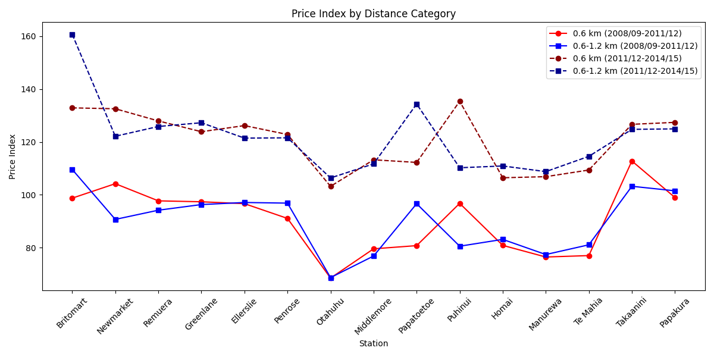
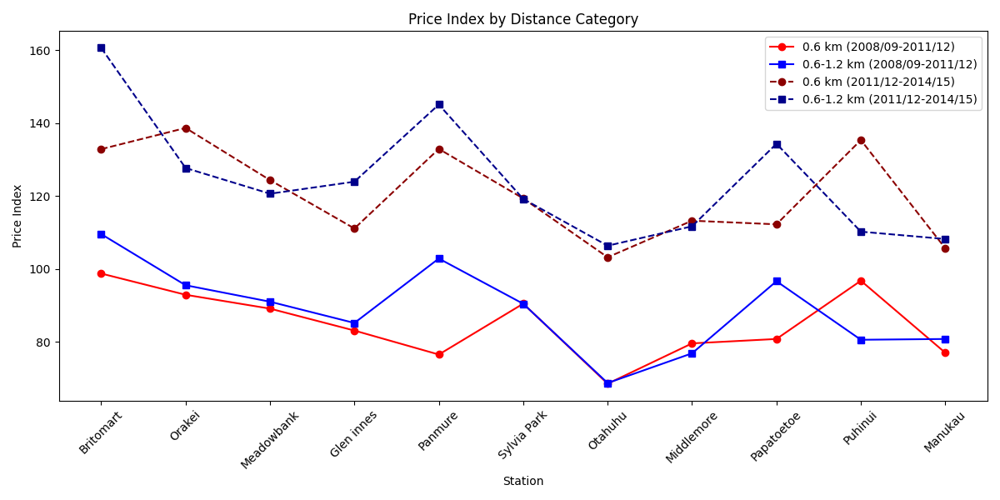
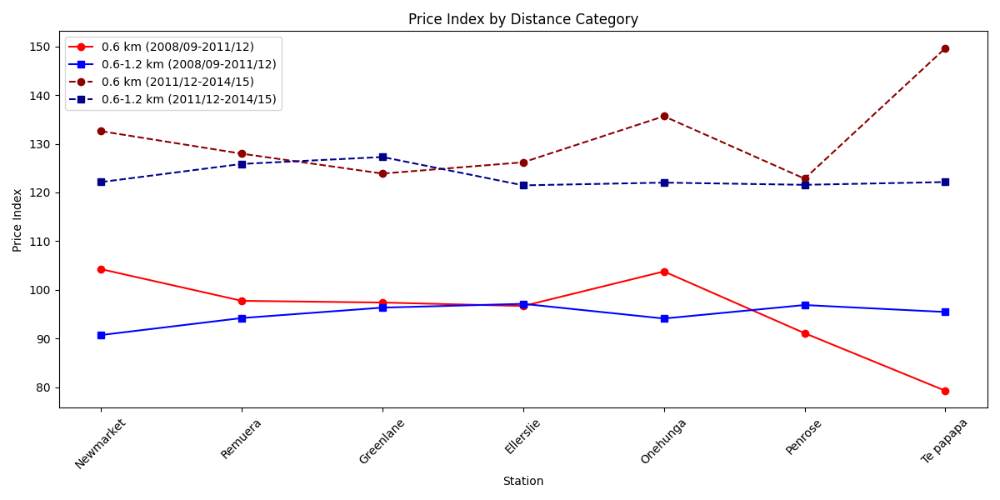

Sheet 02 · Research
Housing resilience and transit-oriented development in Auckland
A summer research scholarship asking whether homes close to Auckland’s railway stations hold their value better through an economic downturn — and whether that is down to the station, or to the place around it.
- Dates
- November 2024 – February 2025
- Context
- University of Auckland Summer Research Scholarship
- Role
- Researcher (individual project)
- Study area
- 24 stations on the Southern, Eastern and Onehunga lines
- Method
- Repeat Sales Index with OLS regression
- Period
- The 2005–2015 financial cycle

01The question
In the third quarter of 2024, more than 16% of homes resold in Auckland sold for less than their purchase price — the highest share in almost ten years. Research in the United States suggests that homes in walkable neighbourhoods close to rail hold their value better through a downturn. I set out to test whether the same is true in Auckland, and whether transit-oriented development (TOD) is what makes the difference.
- Identify TOD and transit-adjacent development (TAD) areas around Auckland’s stations.
- Measure housing value resilience around the stations through the last full financial cycle.
- Understand how far TOD characteristics explain the differences.
02Method
- Study area: the 24 stations on the Southern, Eastern and Onehunga lines that were open throughout 2004–2015. The Western Line, which carried far fewer passengers, and Parnell station, which opened in 2017, were excluded.
- Two distance bands: 0–0.6 km, a comfortable walk, and 0.6–1.2 km, roughly the 15-minute walking catchment.
- Time frame: the phases of New Zealand’s financial cycle identified by Davies and Gai — downturn, trough and expansion.
- Repeat Sales Index: pairs of sales of the same property, with log price differences regressed on time-period dummies using ordinary least squares (the Bailey–Muth–Nourse model). Repeat sales suit New Zealand, where the detailed property data that hedonic models need is hard to obtain.
- Station profiles: nearby shops, schools and hospitals, housing mix, crime and walkability.


03Findings
Reading the price indices alongside each station’s characteristics produced three distinct groups.
Most resilient
High-value core zones
Britomart · Newmarket · Remuera · Greenlane · Orakei · Meadowbank
Prices held steady through the downturn and recovered fastest. Dense, walkable, mixed-use areas with strong services and low crime.
Moderately resilient
Emerging zones
Ellerslie · Onehunga · Penrose · Sylvia Park · Panmure · Te Papapa
Prices rose but were more volatile, especially beyond 0.6 km, where car-oriented layouts and fragmented land use limited the benefit.
Least resilient
Peripheral zones
Manukau · Puhinui · Middlemore · Papatoetoe · Otahuhu · Homai · Manurewa · Te Mahia · Takanini · Papakura
Being near a station did not stabilise prices. Low walkability, car dependence and higher crime left values exposed in both distance bands.
04What it means
Proximity to a station is not enough on its own. Resilience fades with distance unless it is backed by walkable, mixed-use urban design — which argues for planning whole corridors, not isolated station sites.
The study has clear limits: it includes only homes sold more than once, capital values move more smoothly than market prices, and it cannot fully separate the effect of TOD from the characteristics of the homes themselves.
This was my first independent research project. Designing the study and preparing the sales data took far longer than I expected, and pushed me to strengthen my statistics and learn new ways to visualise data — it is also what convinced me to go on to a master’s degree.
Charts: author’s analysis of Auckland property sales data.